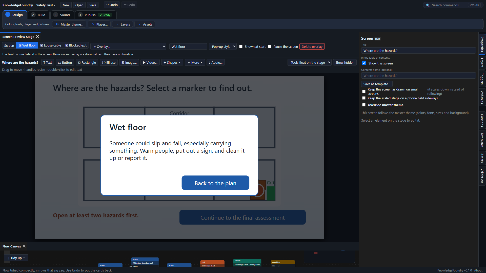

Add overlays (pop-up style or panel style)
An overlay is a set of items that sits on top of a screen and appears when you say so. Use one for a definition, a hint, a photo that opens larger, or a set of tabs, without making a screen of its own for each. There are two styles:
- Pop-up style: the screen behind goes dim and cannot be used until the pop-up is closed. Keyboard focus moves into it, Escape closes it, and focus goes back to where the learner was.
- Panel style: it sits on the screen and the rest stays usable. Good for tabs and notes.

- Select the screen, then use the strip above the stage: + Overlay…, then Pop-up style or Panel style. You can change the style later. The stage now shows that overlay, with the screen faint behind it.
- Add text, pictures, shapes and buttons as usual. They belong to the overlay. Choose Screen in the strip to go back to the screen itself.
- Open Build → Triggers and add a trigger: when the learner selects (a button on the screen), show overlay (your overlay).
- Give the way out: add a button on a pop-up and a trigger when the learner selects (it), hide overlay. If you forget, the player adds a Close button, and Escape always works.
Tabs. Make a panel-style overlay for each tab and a button for each. Each button's trigger hides the other overlays and shows its own.
Make learners look at everything. In a trigger, tick Only if these overlays have been shown and choose all of them. For example, show the Continue button only when every tab has been opened.
Static or animated. An overlay is static to start with: its items appear at once, without effects or sound. To animate it, choose the overlay in the strip and tick Own timeline. A timeline for that overlay opens under the stage. Set when its items appear, add animations and keyframes, put sound and captions on it, and drop markers on it, the same way as on a screen's timeline. It plays each time the overlay is shown.
- When shown again decides what happens the next time the overlay is shown: Start over (the usual choice) or Pick up where it left off.
- A trigger can wait for the timeline of (your overlay) ends, or for one of its markers.
- While the overlay is in front, the player's play button, seek bar and captions work on its timeline. When it closes, they go back to the screen's.
Good to know. Switch on Pause the screen if the screen's animation or narration should wait while the overlay is showing. If an overlay has its own sound and the screen has sound too, Check course warns that the two can play at once unless Pause the screen is on. Deleting an overlay deletes the items and markers on it and the triggers that used them, and one Undo brings them back.